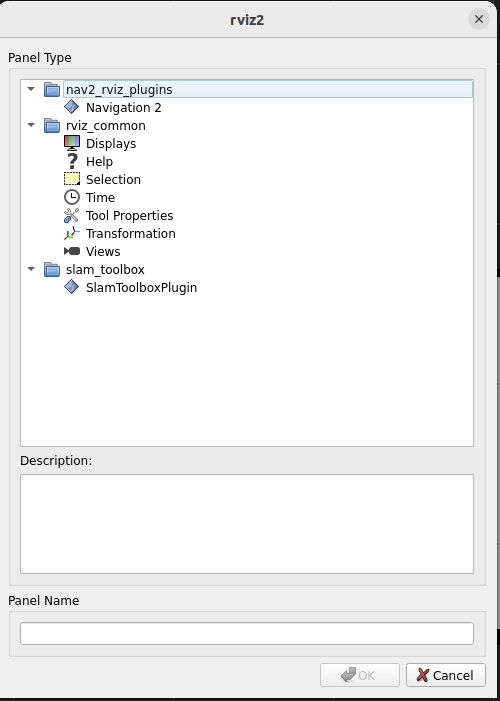
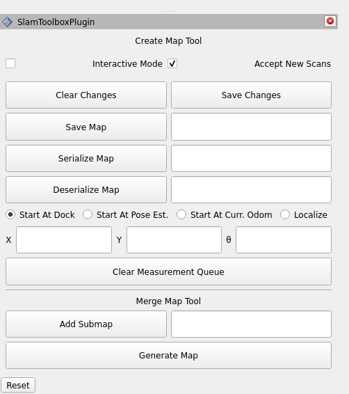

MIRTE with PDDL (Instructions)
During this exercise, you will learn how to use PDDL with PlanSys2 to make Mirte navigate using nav2.
Before we start digging in the PDDL formulation and PlanSys2, first we need to create a map of the arena to enable the robot to navigate autonomously.
Video of Mirte moving around with PlanSys2
Important
All the commands below should be executed inside a docker container of the mirte_playground image.
Check the Use Mirte with Docker page for detailed instructions on how to download and run the image.
Mapping
Place Mirte inside the arena, preferably close to the middle to make it easier for Mirte to move.
Start the mapping stack
Start the navigation stack:
ros2 launch mirte_navigation real_robot_navigation.launch.py
In another terminal, start the slam toolbox:
ros2 launch slam_toolbox online_async_launch.py use_sim_time:=false
Save map
To save the map you just created, first you need to add the SlamToolboxPlugin to RVIZ. For that, on the top left part of RVIZ, click on :
After adding the panel, it should show up in the bottom left part of RVIZ
Insert the following path in the field in front of the Save Map button and click on the button:
/home/ubuntu-user/mirte_ws/src/mirte_navigation/maps/arena_map
PlanSys2
For this exercise, we designed a very simple scenario where Mirte should move through 3 waypoints and return to the initial position.
PDDL
The first thing you need to do is to modify the domain.pddl and problem.pddl files to model the scenario described above.
Tip
Make sure you model which points were already visited and modify the action preconditions to use this knowledge. Also, make sure the action effects properly model the location of the robot, and its impact on the visisted waypoints knowledge.
Waypoints configuration
Update the waypoints.yml configuration file with coordinates that make sense for your map.
To obtain the coordinates of points in the map, you can click on the Publish Point button on the top part of RVIZ and subscribe to the /clicked_point topic to obtain the coordinates.
ros2 topic echo /clicked_point
Adding more waypoints
If you want to add more waypoints, in addition to adding them to the waypoints.yml file, you need to declare the new waypoints in the move action.
Run PlanSys with Mirte
First, connect to Mirte.
In your computer, inside the docker container, start the navigation stack:
ros2 launch mirte_navigation real_robot_navigation.launch.py
In another terminal, start PlanSys2:
ros2 launch mirte_pddl mirte_pddl.launch.py
Note
Sometimes PlanSys2 crashes when starting, so give it another try in case it doesn’t work in the first try.